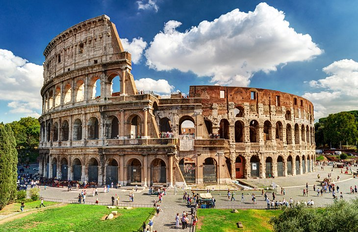

Machu Picchu, Peru

Built in lush, mountainous terrain high above the Urubamba River, Machu Picchu lies in one of the most stunning settings of any archeological site in the world. This ancient city of Incas cascades down steep walls on each side of the mountain, with terraced steps that disappear over cliff edges into the valley below. These incredible ruins have been restored and are well maintained, giving visitors a good indication of what the city might have looked like when it was occupied during the 15th and 16th centuries.
The Colosseum
The eternal symbol of the Eternal City, the Colosseum was commissioned more than 2,000 years ago by Emperor Vespasian as a gift to the Roman people. Many emperors, wars, and disasters later, the Colosseum still stands as marvelous as ever. The impressive design of the amphitheater allowed easy access to 55,000 people who were seated according to their rank. Just like today, the more wealth you have would equal a better seat close to the action. And there was no lack of action. Gladiator battles, chariot races, wild animal hunts, public executions, and even sea battles were some of the spectacles the ancient Romans could enjoy in the Colosseum.
Great Wall of China

Stretching almost 6,000 kilometers as it snakes its way through forests and mountains, the Great Wall of China is one of those undeniable bucket list sites that have long inspired great adventures. This massive wall, connecting battlements and watchtowers, was built over the centuries, with the oldest sections dating back to the 7th century BC. Today, you can opt to simply visit the wall on a day trip from places like Beijing, or tackle whole sections of it on organized, multi-day trips. Some sections of the wall have been restored, while other sections are badly in need of repair.